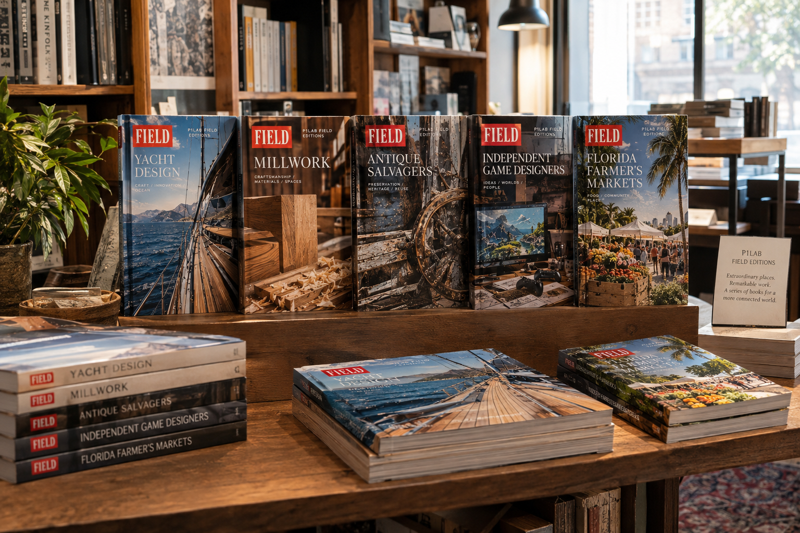

You own a world. We connect it to everyone else.
Your work.
A book of its own.
A focused, image-led book that gives your company’s work a more substantial form.
Project Book is for companies whose work deserves more than a conventional brochure or presentation. We bring selected projects, capabilities, specialist knowledge and the decisions behind the work together in a carefully edited, professionally designed publication—made to be read, kept and shared.
Explore the Project Book
Remarkable work.
Worlds worth knowing.
FIELD makes collectible books about distinctive businesses, makers, places, products, and specialist knowledge.
Rooted in the tradition of great illustrated print, each volume brings together expansive documentary photography, thoughtful storytelling, and useful detail. Approachable without being simplistic. Considered without being austere.
Across 31 published books, P1Lab has taken on subjects ranging from robotics and systems philosophy to theology, literature, music, historic cooking, and garden history. The connecting principle is a commitment to making specialized knowledge accessible without sacrificing its complexity, rigor, or intrinsic interest. Ten titles have ranked among Ingram's top ten in their respective categories, several over multiple years, providing measurable evidence of the catalogue's reach and the team's repeatable ability to bring specialized knowledge to a wider readership. Explore the complete publication record →
P1Lab
The parent research and publishing practice. P1Lab develops commissioned books, research programs, field records and publications that make specialist knowledge accessible without reducing its complexity.
FIELD
Collectible, illustrated books about remarkable work and the worlds around it—from skilled trades and specialist businesses to places, products and creative communities.
GrüvType
GrüvType turns its attention toward the material world people inhabit: gardens, rooms, tools, making, objects, food and the environments we construct around ourselves.
Selected Research & Publishing Programs
Beyond commissioned company books and FIELD, P1Lab undertakes focused investigations and multi-volume studies for subjects that require deeper research.
Florida Field Record
A continuing regional field-record program documenting Florida's people, places, trades, landscapes, working environments and material culture.
Commissioned Field Records
Permanent records of specialized businesses and the work they actually do: the people, tools, processes, environments and knowledge that make the operation what it is.
Arturia Instrumentarium
A 24-volume study of electronic instruments, their invention, architecture, history, interfaces and musical use.
u-he Sound Design Atlas
Eight volumes examining synthesis, sound design, instruments, techniques and the musical practices built around them.
NS Design Electric Cello Study
A five-volume study of the electric cello: construction, materials, electronics, mechanics, performance and the instrument's development.
Electronic Organs
A two-volume study of the electronic organ as instrument, technology, electrical system, architecture and musical environment.
Korea: Material Culture Series
An independent documentary field study beginning in Seoul, recording selected material systems through museums, food, craft, architecture, objects, and everyday physical life.
The Approach
Different subjects. The same basic problem.
You know your world.
A company knows its instruments. A craftsperson knows the work. A hospital knows its system. A place knows itself.
The difficulty is usually somewhere else: giving someone from outside enough understanding to see why that world matters and how its parts connect.
We learn it with you.
We enter the subject, ask questions, follow the work, examine the evidence and pay attention to the connections.
Then we build something that lets another person come into the subject without having to begin where we did.
The Work
The form follows the subject.
Project Books
Focused, image-led company books that bring selected projects, capabilities and specialist knowledge into a coherent, professionally designed publication.
Field Records
Detailed records of active operations, specialized trades, places and working knowledge.
Institutional Studies
Research and publications built with organizations whose knowledge needs a durable public form.
Research Programs
Sustained investigations developed over multiple volumes, subjects or stages.
Commissioned Field Records
For businesses whose work is worth understanding.
The operation is the subject.
P1Lab works with owner-led businesses in specialized fields: marine trades, fabrication, woodworking, restoration, horticulture, construction and other operations where knowledge is carried in the work itself.
A Commissioned Field Record follows the operation as it actually happens and creates a durable record of the people, processes, tools, environment and decisions involved.
The result is not promotional media. It is a substantial record of the business and the knowledge behind it.
About Commissioned Field RecordsWhy the Record Matters
Good work deserves something more durable than a momentary presentation.
Make something that lasts.
P1Lab's work is designed to remain useful after the original project, launch, campaign or conversation has passed.
Books, studies and field records become reference objects: something that can be read, consulted, circulated and returned to.
Give people a way in.
The record is not simply evidence that something exists. It gives someone unfamiliar with the subject enough structure to begin understanding it.
That is the connection.
A Subject Is a Starting Point
Everything can lead somewhere else.
A synthesizer can lead to electrical engineering, industrial design, music, manufacturing and the history of invention. A boatyard can lead to materials, navigation, engineering, craftsmanship and the people who keep those skills alive.
A city, an instrument, a trade, a medical system, a piece of software or a particular way of making something can all be starting points.
P1Lab follows the subject far enough to discover where it leads.